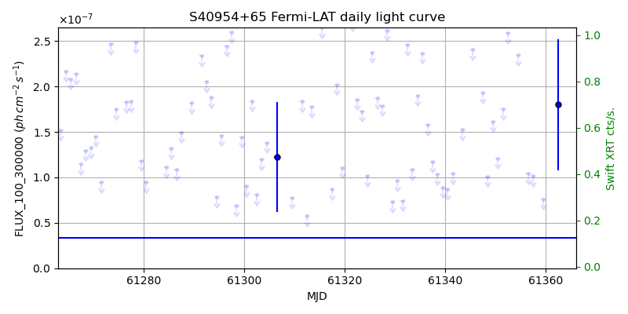
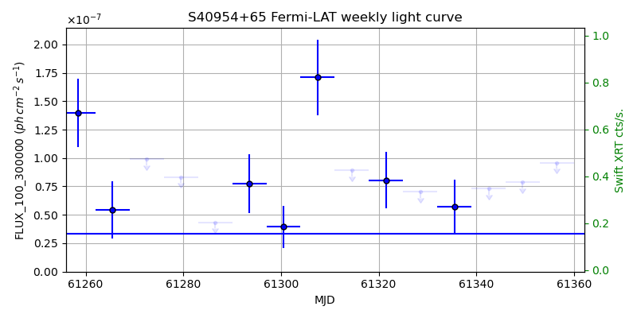
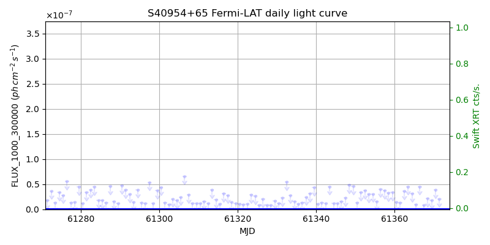

LAT Lightcurve site: https://fermi.gsfc.nasa.gov/ssc/data/access/lat/msl_lc/source/S4_0954p65
Swift site: https://www.swift.psu.edu/monitoring/source.php?source=0954+658
NED: Query
Time of last update of this page: UT: 2026-11-20 16:21 (MJD: 61364.682)
| Property | Value |
|---|---|
| R.A. | 9:58:47.28 |
| Dec. | 65:33:54.0 |
| z | 0.369 |
| 3FGL SpectrumType | PowerLaw |
| 3FGL PL Index | 2.38 |
| 3FGL Flux_100_300000 | 3.33e-08 1 / (s cm2) |
| 3FGL Flux_1000_300000 | 1.38e-09 1 / (s cm2) |
| 3FGL Flux >200 GeV | 9.14e-13 1 / (s cm2) |
| 3FGL Extrap. Crab >200 GeV | 0.00 |
| 3FGL Flux After EBL Absorption >200GeV | 2.40e-13 1 / (s cm2) |
| 3FGL EBL Crab Fraction >200GeV | 0.00 |

| MJD | dMJD | Flux | dFlux | Frac3FGL | FracCrab>200GeV | EBLFracCrab>200GeV |
|---|---|---|---|---|---|---|
| 61359.50 | 0.50 | 7.60e-08 | 0.00e+00 | 0.00 | 0.00 | 0.00 |
| 61360.50 | 0.50 | 3.25e-07 | 0.00e+00 | 0.00 | 0.00 | 0.00 |
| 61361.50 | 0.50 | 2.91e-07 | 0.00e+00 | 0.00 | 0.00 | 0.00 |
| 61362.50 | 0.50 | 1.80e-07 | 7.20e-08 | 5.41 | 0.02 | 0.01 |
| 61363.50 | 0.50 | 2.88e-07 | 0.00e+00 | 0.00 | 0.00 | 0.00 |

| MJD | dMJD | Flux | dFlux | Frac3FGL | FracCrab>200GeV | EBLFracCrab>200GeV |
|---|---|---|---|---|---|---|
| 61328.50 | 3.50 | 7.05e-08 | 0.00e+00 | 0.00 | 0.00 | 0.00 |
| 61335.50 | 3.50 | 5.74e-08 | 2.35e-08 | 1.73 | 0.01 | 0.00 |
| 61342.50 | 3.50 | 7.32e-08 | 0.00e+00 | 0.00 | 0.00 | 0.00 |
| 61349.50 | 3.50 | 7.88e-08 | 0.00e+00 | 0.00 | 0.00 | 0.00 |
| 61356.50 | 3.50 | 9.59e-08 | 0.00e+00 | 0.00 | 0.00 | 0.00 |

| MJD | dMJD | Flux | dFlux | Frac3FGL | FracCrab>200GeV | EBLFracCrab>200GeV |
|---|---|---|---|---|---|---|
| 61359.50 | 0.50 | 3.34e-08 | 0.00e+00 | 0.00 | 0.00 | 0.00 |
| 61360.50 | 0.50 | 1.40e-08 | 0.00e+00 | 0.00 | 0.00 | 0.00 |
| 61361.50 | 0.50 | 1.30e-08 | 0.00e+00 | 0.00 | 0.00 | 0.00 |
| 61362.50 | 0.50 | 3.58e-08 | 0.00e+00 | 0.00 | 0.00 | 0.00 |
| 61363.50 | 0.50 | 4.50e-08 | 0.00e+00 | 0.00 | 0.00 | 0.00 |
| MJD | dMJD | Flux | dFlux | Frac3FGL | FracCrab>200GeV | EBLFracCrab>200GeV |
|---|---|---|---|---|---|---|
| 61328.50 | 3.50 | 3.76e-09 | 0.00e+00 | 0.00 | 0.00 | 0.00 |
| 61335.50 | 3.50 | 1.27e-08 | 0.00e+00 | 0.00 | 0.00 | 0.00 |
| 61342.50 | 3.50 | 7.32e-09 | 0.00e+00 | 0.00 | 0.00 | 0.00 |
| 61349.50 | 3.50 | 1.41e-08 | 0.00e+00 | 0.00 | 0.00 | 0.00 |
| 61356.50 | 3.50 | 1.40e-08 | 0.00e+00 | 0.00 | 0.00 | 0.00 |
--------------------------------------------------------- Using user-supplied coords: 9:58:47.28 65:33:54.0 2000 --------------------------------------------------------- FLWO UT night of: 2026-11-21 Local Sid. @ Midnight: 03:37 Sunset (-15.0) (local, UT): 18:33 01:33 Sunrise (-15.0) (local, UT): 05:47 12:47 Moonrise (local, UT): Moonset (local, UT): 03:40 10:40 Moon phase: 0.85 --------------------------------------------------------- AzTime LSID UT Obj_el Obj_az Mn_el Mn_az Sep. --------------------------------------------------------- 18:33 22:09 01:33 7.2 0.9 47.9 117.4 101.9 19:03 22:39 02:03 7.5 4.0 53.3 125.0 101.7 19:33 23:09 02:33 8.1 7.1 58.2 134.7 101.5 20:03 23:39 03:03 9.1 10.1 62.3 146.9 101.3 20:33 00:09 03:33 10.3 13.0 65.1 162.1 101.2 21:03 00:39 04:03 11.9 15.7 66.3 179.7 101.0 21:33 01:09 04:33 13.8 18.3 65.4 197.5 100.8 22:03 01:39 05:03 15.9 20.7 62.9 213.2 100.7 22:33 02:09 05:33 18.3 22.8 59.0 225.9 100.5 23:03 02:39 06:03 20.8 24.7 54.2 235.9 100.4 23:33 03:09 06:33 23.6 26.3 48.9 243.9 100.2 00:03 03:39 07:03 26.5 27.5 43.2 250.4 100.0 00:33 04:10 07:33 29.5 28.5 37.3 255.9 99.9 01:03 04:40 08:03 32.6 29.1 31.2 260.7 99.7 01:33 05:10 08:33 35.7 29.2 25.1 265.1 99.5 02:03 05:40 09:03 38.8 28.9 19.0 269.2 99.4 02:33 06:10 09:33 41.9 28.1 12.9 273.0 99.2 03:03 06:40 10:03 44.8 26.7 6.8 276.9 99.0 03:33 07:10 10:33 47.6 24.6 1.0 280.7 98.9 04:03 07:40 11:03 50.1 21.9 -4.9 284.7 98.7 04:33 08:10 11:33 52.3 18.3 -11.1 288.8 98.5 05:03 08:40 12:03 54.1 14.0 -16.8 293.2 98.3 05:33 09:10 12:33 55.4 9.1 -22.3 298.1 98.1 05:47 09:25 12:47 55.8 6.6 -24.8 300.5 98.0 --------------------------------------------------------- Dark hours >55 deg.: 0.42 srcstart (UT): 2026-11-21 12:21 srcend (UT): 2026-11-21 12:46